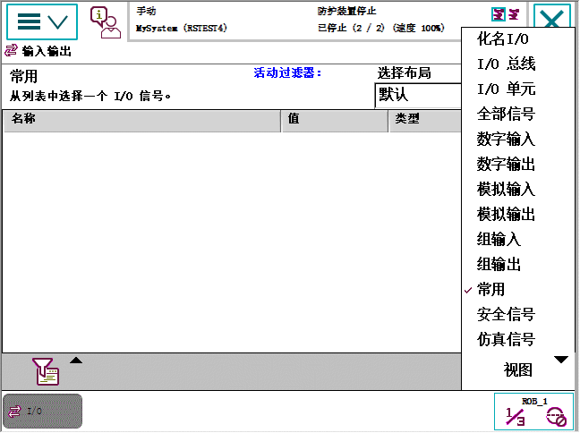

I/O 信号属性用于查看输入和输出信号及其值。信号使用系统参数配置，。
本节详细介绍如何查看信号列表。
操作 | |
1 | 在 ABB 菜单中，点击 Inputs and Outputs（输入和输出）。 显示 Most Common（常用）I/O 信号的列表。  |
2 | 点击 View（视图）切换选择列表中的信号。 |
 | 提示 如果要在列表中查看信号标签，请点击 Select Layout（选择布局）菜单。 |
过滤数据 。
| 处理输入和输出，I/O | ||
| 查看信号列表 | ||
| 概述 | I/O 信号属性用于查看输入和输出信号及其值。信号使用系统参数配置，。 | ||||||
| 查看信号列表的方式 | 本节详细介绍如何查看信号列表。
| ||||||
| |||||||
| 相关信息 | 过滤数据 。 |